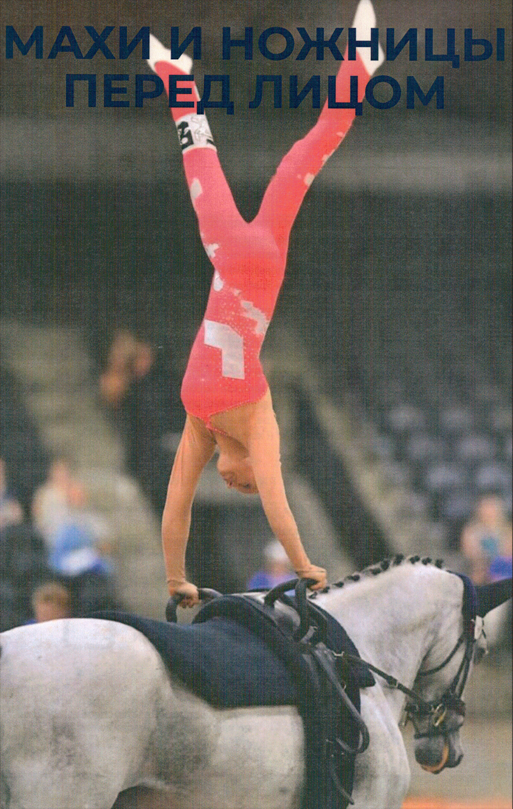
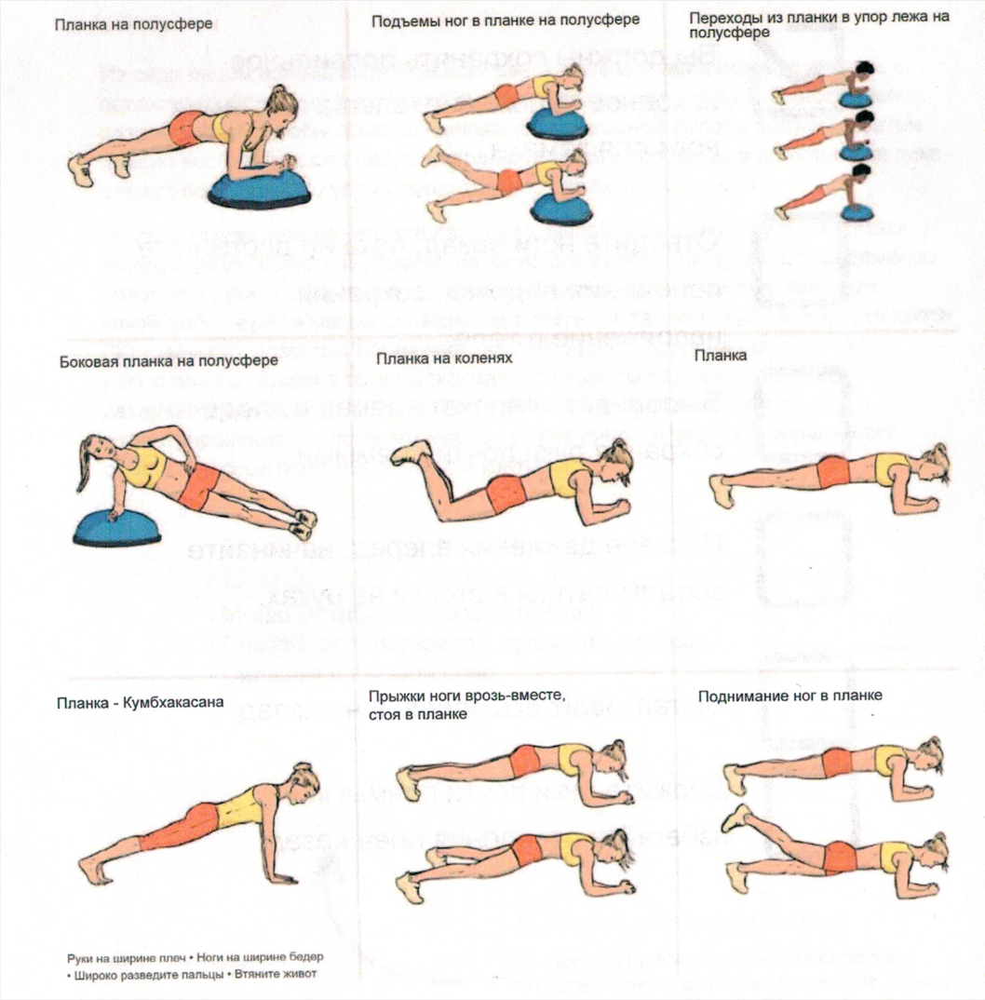
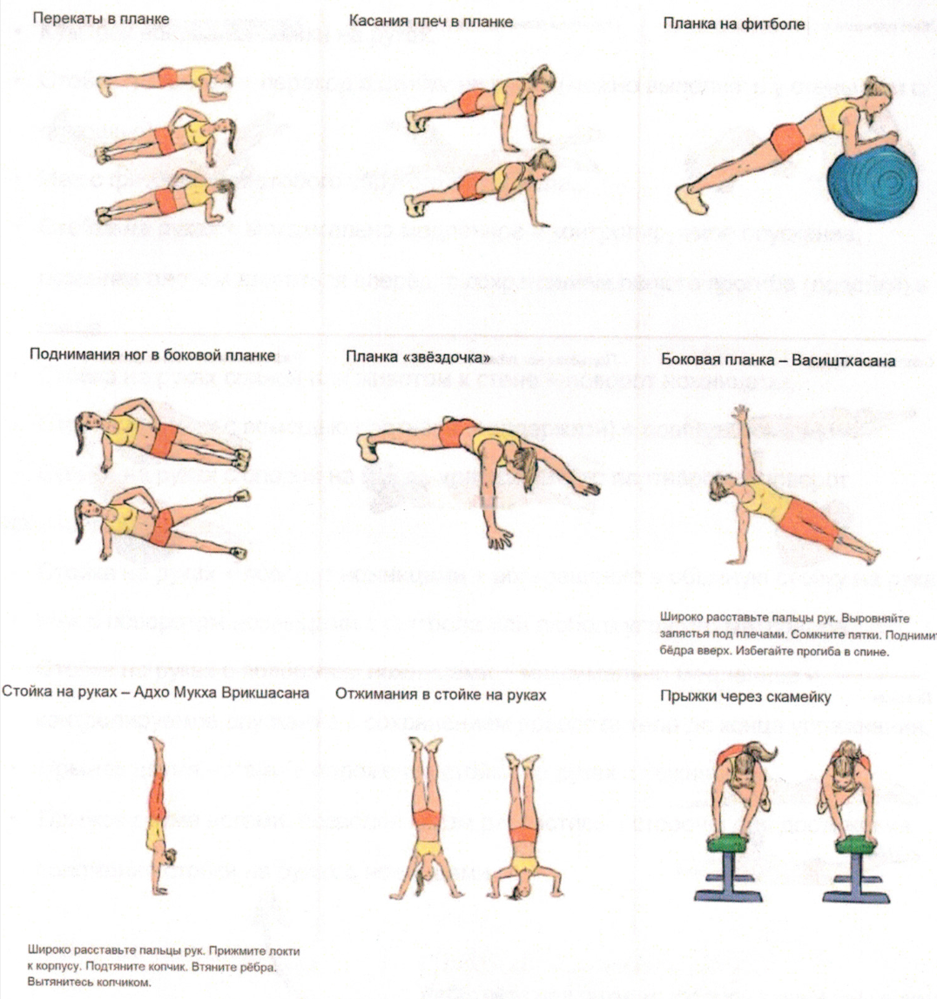
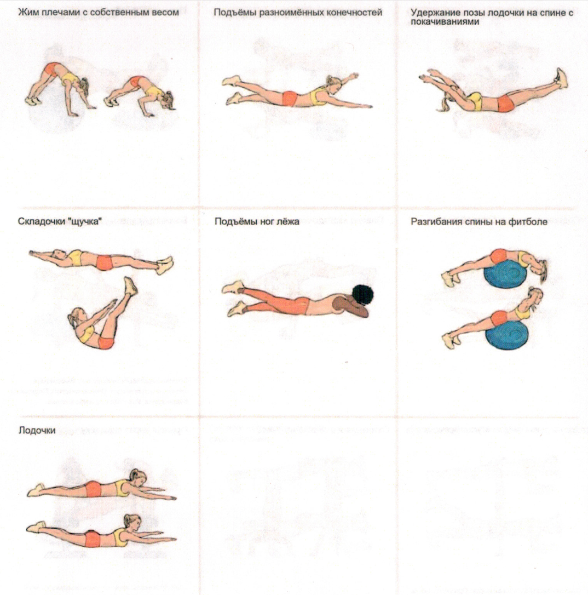

Нажмите на фото, чтобы увеличить
Вы также можете использовать это в качестве списка для самопроверки. Нужно ли улучшить какой-либо аспект?
Из седа лицом вперед вытяните ноги вверх плавным движением, стремясь к положению, близкому к стойке на руках со сведенными ногами. Одновременно разогните руки, чтобы достичь наивысшей возможной высоты подъема. Затем плавно вернитесь в сед лицом вперед без какой-либо паузы в движении на пике вашего подъема. Это упражнение требует баланса и контроля.
Из седа лицом вперед начните движение, выполняя мах вытянутыми ногами вверх, стремясь достичь положения, близкого к стойке на руках. Одновременно разогните руки, чтобы достичь наивысшей возможной точки подъема. Без какой-либо паузы в маховом движении поверните таз влево на четверть оборота (90 градусов), позволяя ногам пройти близко друг к другу на одинаковом расстоянии от земли в точке максимальной высоты подъема.
Завершите упражнение мягким приземлением, сохраняя прямое и отцентрированное положение в седе, но уже лицом назад. Это упражнение сочетает в себе ловкость, баланс и контроль.


